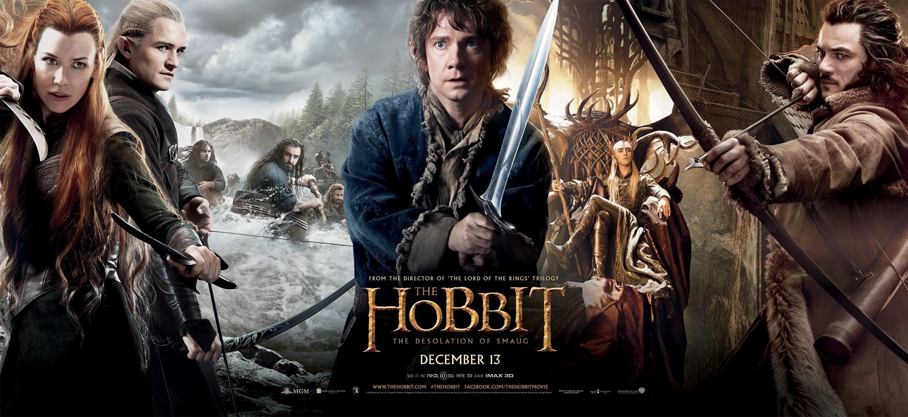

Harry potter

Harry Potter is a British-American film series based on the Harry Potter novels by author J. K. Rowling. The series is distributed by Warner Bros. and consists of eight fantasy films, beginning with Harry Potter and the Philosopher's Stone (2001) and culminating with Harry Potter and the Deathly Hallows – Part 2 (2011).[2][3] The series was mainly produced by David Heyman, and stars Daniel Radcliffe, Rupert Grint and Emma Watson as the three leading characters: Harry Potter, Ron Weasley and Hermione Granger. Four directors worked on the series: Chris Columbus, Alfonso Cuaron, Mike Newell, and David Yates.[4] All eight movies had their screenplays written by Steve Kloves, with the exception of Harry Potter and the Order of the Phoenix (2007), written by Michael Goldenberg. Production took over ten years to complete, with the main story arc following Harry Potter's quest to overcome his arch-enemy Lord Voldemort.[5] Harry Potter and the Deathly Hallows, the seventh and final novel in the series, was adapted into two feature-length parts.[6] Part 1 was released in November 2010, and Part 2 was released in July 2011.[7][8] Harry Potter and the Prisoner of Azkaban is the only film in the series not among the 50 highest-grossing films, with Harry Potter and the Deathly Hallows – Part 2, the highest-grossing film in the series and one of 26 films to gross over $1 billion, ranking at number 8.[9] Without inflation adjustment, it is the second highest-grossing film series with $7.7 billion in worldwide receipts.
Gravity
Director: Alfonso CuarГіn
Genre: fantasy/science fiction film
Release Date: October 4, 2013 (USA)
Dr. Ryan Stone (Sandra Bullock) is a medical engineer on her first shuttle mission. Her commander is veteran astronaut Matt Kowalsky (George Clooney), helming his last flight before retirement. Then, during a routine space walk by the pair, disaster strikes: The shuttle is destroyed, leaving Ryan and Matt stranded in deep space with no link to Earth and no hope of rescue. As fear turns to panic, they realize that the only way home may be to venture further into space.
Martian
Director: Ridley Scott
Genre: The screenplay by Drew Goddard is based on Andy Weir's 2011 novel of the same name. Matt Damon stars as an astronaut who is mistakenly presumed dead and left behind on Mars.
Release Date: The film was released in the United Kingdom on September 30, 2015 and in the United States on October 2, 2015 in 2D, 3D, IMAX 3D and 4DX.[5] It received positive reviews and grossed over $630 million worldwide, becoming Scott's highest-grossing film to date, as well as the tenth-highest-grossing film of 2015.
NASA astronaut/ botanist Mark Watney (Matt Damon) is left stranded on Mars when the crew of the Ares 3 mission are forced to evacuate their landing site in Acidalia Planiria on sol 18 (Martian day) of their expedition due to an intense dust storm with high winds. During the evacuation. Watney is impaled by an antenna and swept away. Also due to to zero visibility, the crew presumes that Warney is dead. Turns out, he is injured but alive. With no way to contact Earth, Watney must rely on his scientific and technical skills to survive, growing potatoes in the crew's Martian habitat (or Hab) and burning hydrazine to make water. He starts documenting his experiences. Watney reaches the MAV and receives instructions on the radical modifications to the MAV that are necessary to reduce its weight and intercept Hermes during its flyby. The modifications leave a large hole in the front of the MAV, which Watney covers with Hab canvas. During launch, the canvas patch tears, slowing the liftoff and leaving the MAV on a course too far from the Hermes for Watney to be rescued. Lewis develops a plan to intercept the MAV by firing Hermes' attitude thrusters, then slowing down to match the MAV's velocity by blowing a hole in the Hermes front airlock with an improvised sugar-and-liquid-oxygen oxyliquit bomb. A crewman on a tether uses a Manned Maneuvering Unit to reach Watney aboard the MAV and carry him back to Hermes. Watney and his crew return to Earth safe.
Hobbit
The Hobbit is a film series consisting of three high fantasy adventure films directed by Peter Jackson. They are based on the 1937 novel The Hobbit by J. R. R. Tolkien, with large portions of the trilogy inspired by the appendices to The Return of the King, which expand on the story told in The Hobbit, as well as new material and characters written especially for the films. Together they act as a prequel to Jackson's The Lord of the Rings film trilogy. The films are subtitled An Unexpected Journey (2012), The Desolation of Smaug (2013), and The Battle of the Five Armies (2014).[4] The screenplay was written by Fran Walsh, Philippa Boyens, Jackson, and Guillermo del Toro, who was originally chosen to direct before his departure from the project. The films take place in the fictional world of Middle-earth sixty years before the beginning of The Lord of the Rings, and follow hobbit Bilbo Baggins (Martin Freeman), who is convinced by the wizard Gandalf the Grey (Ian McKellen) to accompany thirteen dwarves, led by Thorin Oakenshield (Richard Armitage), on a quest to reclaim the Lonely Mountain from the dragon Smaug (voiced by Benedict Cumberbatch). The films also expand upon certain elements from the novel and other source material, such as Gandalf's investigation at Dol Guldur, and the pursuit of Azog and Bolg, who seek vengeance against Thorin and his ancestors. The films feature an ensemble cast that also includes James Nesbitt, Ken Stott, Evangeline Lilly, Lee Pace and Luke Evans, with several actors reprising their roles from The Lord of the Rings, including Cate Blanchett, Orlando Bloom, Ian Holm, Christopher Lee, Hugo Weaving, Elijah Wood and Andy Serkis. The films also feature Manu Bennett, Sylvester McCoy, Stephen Fry, Mikael Persbrandt, Barry Humphries, and Lawrence Makoare. Also returning for production, among others, were illustrators John Howe and Alan Lee, art director Dan Hennah, cinematographer Andrew Lesnie, and composer Howard Shore, while props were again crafted by Weta Workshop, with visual effects managed by Weta Digital. The first film in the series premiered at the Embassy Theatre in Wellington, New Zealand on 28 November 2012. One hundred thousand people lined the red carpet on Courtenay Place, and the entire event was broadcast live on television in New Zealand and streamed over the Internet. The second film of the series premiered at the Dolby Theatre in Los Angeles, California on 2 December 2013. The third and final film premiered at Leicester square in London on 1 December 2014.[5]